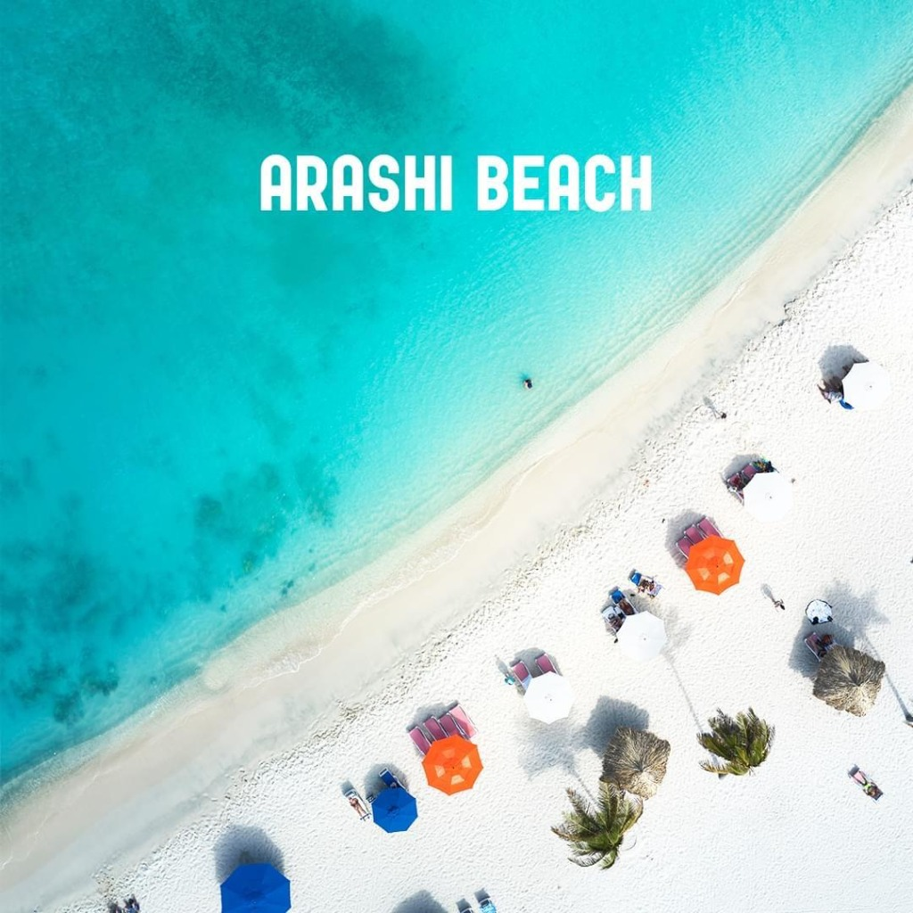

Northern Tip · California Lighthouse
Arashi Beach
15.1 mi · ~34 min drive
Situated near Aruba's northernmost point, Arashi Beach is celebrated for its crystal-clear gentle waves, bright white sands, and fantastic shallow reef snorkeling. A favorite for peaceful morning dips, sunset viewing, and spotting tropical reef fish and sea turtles.